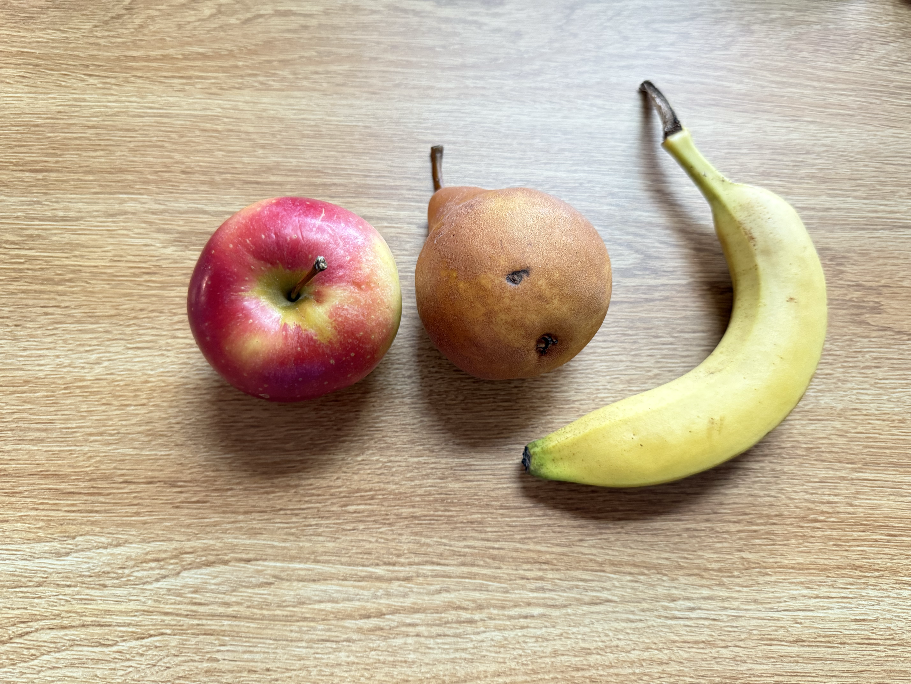
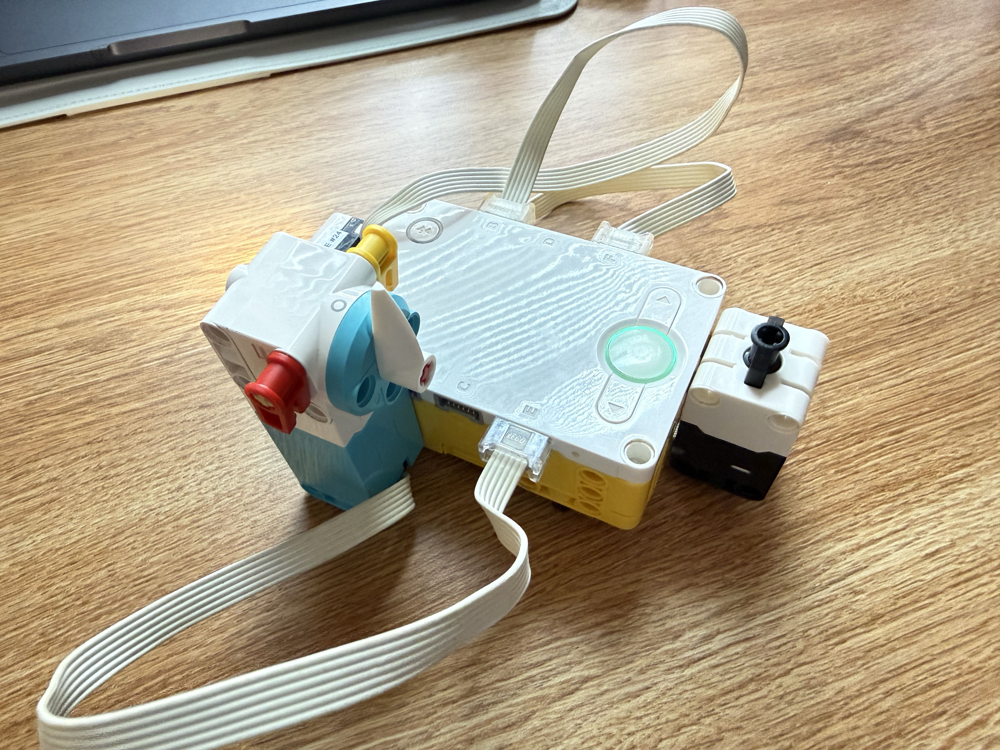
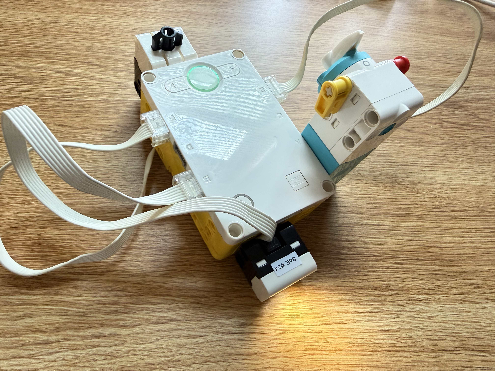

When the force sensor is pressed, the color sensor will read the color of the fruit and determine if it’s an apple or a banana. When the color sensor detects another color that isn’t red or yellow, the indicator will go back to the starting position. When it detects yellow or a banana, the indicator will move to the right for a banana and move to the left for an apple.